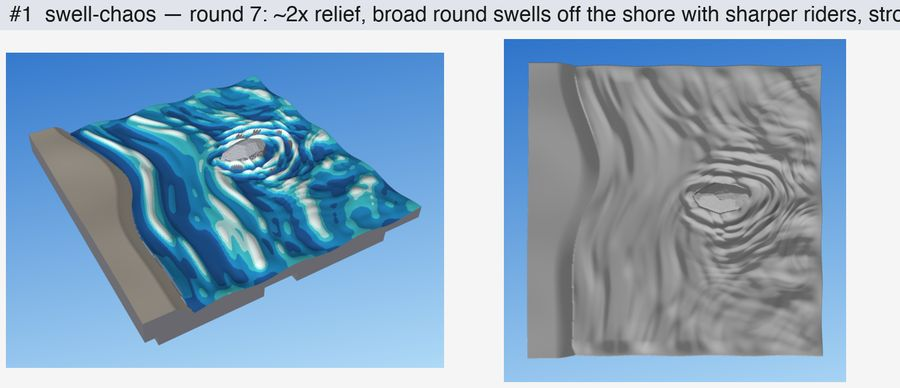
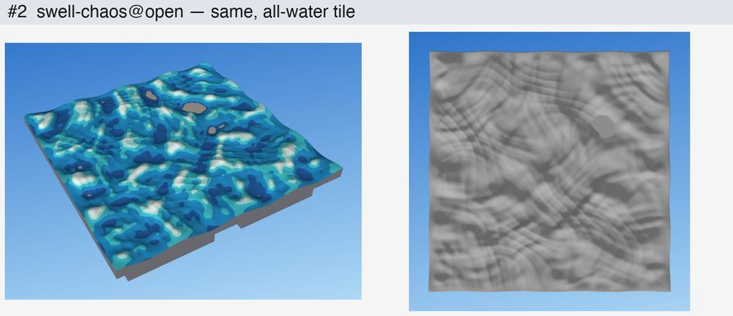
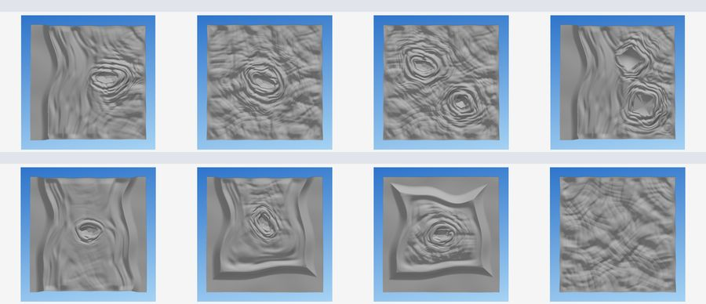
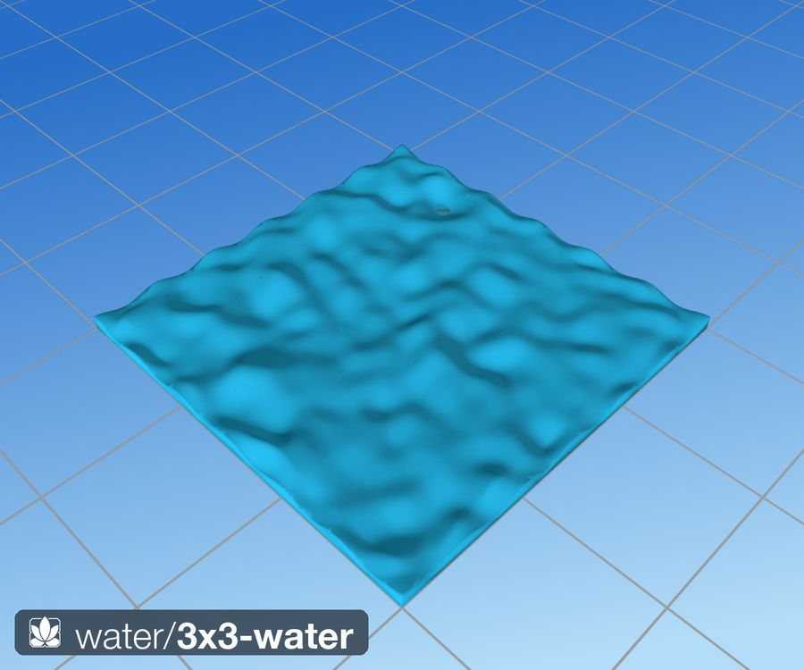
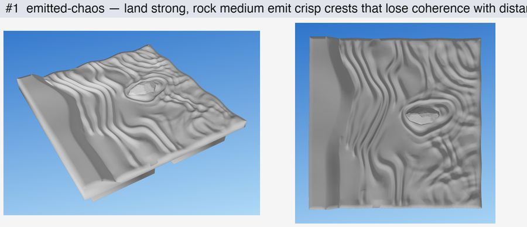

What it looks like
The waves come from things. Land sends out the biggest waves: long rounded swells that follow the shoreline, with smaller, sharper waves riding on them. Each rock sends out short chop that hugs its outline, with a little extra wake on the side away from the shore. The further a wave travels from its source, the more it loses its shape, so the water is orderly near the shore and rocks and becomes a soft, crossing chop out in the open.
The relief is exaggerated, about 2 mm from trough to crest, so the waves cast shadows and catch a drybrush. Crests are rounded and at least about 1 mm wide; troughs are broad and smooth. There are no perfect rings, no rows of parallel waves, and no pattern that repeats.

Open water, bays and obstacles
The same water works whatever is in the tile. In open water with nothing in it, faint sources at the corners give a calm, directionless chop. A rock in open water makes its own rings, and two rocks make two sets that merge between them. Square obstacles get squarish rings. When land surrounds the water on two, three or four sides, the shore waves stay close to the banks and the middle of the pond goes calm.


The shore
The shore is where a meadow meets the water. The land runs down a real bank, never a cliff or a cut, and the shoreline wanders in bays, headlands and small coves. Along some stretches the grass grows right to the water and laps over its edge; along others a strip of bare earth up to 4 mm wide lies between. Grass near the water leans toward it or runs along the shore, never away. Three to five clumps of reeds stand in the shallows, each sending out its own small ripple rings. Rocks sit on the land, in the shallows and in the water; the ones in the water ring it with chop.

Reeds are deliberately simple: 5–9 chunky blades per clump with a pointed-oval cross-section, 8–13 mm tall, rising from one base and curving gently outward to a fairly blunt point. They stand no more than about 40° from vertical.
Using it in a tile
The water and shore looks reach the Rust tile language in phases P3 and P4 (see the plan). The language already names the water level: library/parts/levels.kdl sets water 2.6, so a tile can write level=water. The look's own controls arrive with P3, and the water edge profile joins the edge contract in library/parts/edges.kdl at the same time. The language page lists what exists today.
Until then the labs build the approved look, each as a 2×2 tile with a DungeonBlocks base:
python waterlab/waterlab.py --mode swell-chaos --seed 1 # bank and rock
python waterlab/waterlab.py --mode swell-chaos --scene open-rock # any scene below
python waterlab/waterlab.py --mode swell-chaos --open # all water
python shorelab/shorelab.py --seed 1 # the shoreThey write waterlab/out/2x2-water-swell-chaos[-<scene>]-s<seed>.stl and shorelab/out/2x2-shore-s<seed>.stl. The Python library's water tiles (src/tiles/water/, built with dharmatiles-gen) use an older, flatter water (the Water layer), not this look.
Specification
Settings
What can be chosen today, in the labs. Everything else is fixed at the approved values.
| Setting | Values | Default | Effect |
|---|---|---|---|
--seed | any integer | 1 | A different sea with the same character. |
--scene | bank-rock, open, open-rock, open-2rocks, shore-shapes, land-2, land-3, land-4 | bank-rock | Where the land is (west; west and east; three sides; all four) and what stands in the water (rocks, a cube, a pyramid). |
--open | flag | off | All water: no land, no rock. |
Sizes and levels
| Height above the base top | mm | Notes |
|---|---|---|
| Calm water level | 2.6 | The named level water in the Rust library. |
| Wave relief | −0.74 to +2.2 | About the water level; troughs are softly floored at −1.1. |
| Tide at the tile edge | ±0.6 | The shared edge profile (below). |
| Water bed | 0.4 | 2.2 below the water level, where the bank ends. |
| Land top (waterlab) | 6.0 | The DungeonBlocks grass band. |
| Meadow ground (shore) | ≥ 3.4 | grasslab's hills; grass on top. |
| Reeds | 8–13 tall | A tall reed can push the tile onto the tall base peg. |
Wave spacing depends on what sends them: land 5–16 mm, rocks 2–4.5 mm, open-water corners 5–14 mm, reeds 1.8–3 mm.
Edges and joining tiles
- Every water tile has the same wave shape along its edges: a sine of 0.6 mm amplitude and 17.5 mm wavelength (half a square), with crests at the square corners and edge centres. Inside 9 mm of the edge the water blends into this profile, and the ripples fade out within 4 mm. Two water tiles of any seed meet with no step.
- The Rust port keeps this profile as part of the edge contract and checks it to within 0.05 mm on all four edges.
- Land meets the tile edge at the ground's edge level. Tile sizes and the edge contract are on the tile system page.
Printing and painting
- No supports. The water is one surface with exactly one height at every point, so nothing on it overhangs. Print base down at 0.2 mm layers.
- Nothing too fine. Crests are at least about 1 mm wide, the shortest waves are 2 mm apart, and there is no detail under 0.3 mm.
- Reeds stand up. Each reed is chunky at the base (about 3.4–4.6 mm wide) and leans no more than about 40° from vertical.
- Painting. Prime dark blue and drybrush lighter blues, then a near-white on the crest tips; the broad crests catch the brush and the troughs stay dark. The painted previews above follow this scheme.
- Checked on every build. Each STL is one watertight body that survives a float32 reload.
The full printing rules are on the printing page.
How it is made
The generator is gen_swell_chaos in waterlab/waterlab.py (line numbers at e0bcb77). It works on a 0.1 mm grid over the tile.
- Scene.
Scene(line 278) builds the land (a bank that rises from the bed with a smoothstep) and the obstacles (rocklab rocks, sunk 1.4 mm)._derive(line 335) finds where the water is and how far each point is from land and rocks. - Distances through the water.
_emit_sources(line 719) measures distance from land and from each rock along paths that stay in the water (_geodesic, line 660), so waves bend round a rock instead of passing through it. Distances from land are rounded off with distance (_round_offsets, line 688), so square shores give rounded waves. - Wave trains. Each emitter sums three or four trains of waves across its wavelength band (
_swell_train, line 849). Longer waves are taller (amplitude ∝ λ1.4) and stay round; shorter ones get sharp crests. Each train's phase wanders more the further it is from its source, so crests are crisp close in and break up far out. - Order and chaos. Near a strong source, that source rules its area. Far from land and rocks, the trains from every source, including faint ones at open corners (
_corner_sources, line 973), are summed into a crossing chop. A smooth hand-over joins the two (gen_swell_chaos, line 877). Rocks get a wake on the side away from the land. - Finish. Troughs are softly floored, a small lip climbs each obstacle, the tide and edge profile (
tide_field, line 375) are added, and the relief fades out at the shore and the rim. Exposed land gets dirtlab's dirt texture.build(line 1032) turns the height field into a solid on a uniform 0.2 mm mesh, adds the rock and the base, and checks it.
The shore (shorelab/shorelab.py) uses the same water. make_shore_ground (line 92) ramps grasslab's hills down a wobbly bank to the bed. Rocks are scattered and split into wet and dry. A bare strip of varying width follows the waterline. steer_shore (line 143) turns grass near the water toward it. make_reeds (line 164) plants the clumps. build_water (line 227) runs the water over this ground, with slightly softened chop and reed rings, and keeps it inside the basin so the tide never floods land into puddles.
Key constants (waterlab.py)
| Constant | Line | Value | Meaning |
|---|---|---|---|
WL_MM | 31 | 2.6 | Calm water level (mm). |
BED_DEPTH_MM | 41 | 2.2 | Bed below the water level. |
MESH_SUBSAMPLE | 42 | 2 | Uniform 0.2 mm top mesh. |
TIDE_EDGE_AMP_MM, TIDE_EDGE_LAMBDA_MM | 47–48 | 0.6; 17.5 | The shared edge profile. |
TIDE_EDGE_FADE_MM | 49 | 9 | Width of the blend into the edge profile. |
RIM_FADE_MM | 39 | 4 | Ripples fade out this close to the rim. |
CHAOS_CORNER | 124 | 0.3, 70 mm | Strength and reach of the faint corner emitters. |
CHAOS_WOBBLE_GROW | 125 | 0.06 | Extra phase wander per mm from a source. |
SWELL_BANDS | 142 | land 5–16, rock 2–4.5, corner 5–14, reed 1.8–3 | Wavelength band per emitter (mm). |
SWELL_AMP_EXP | 150 | 1.4 | Long waves dominate. |
SWELL_AMP_MM | 153 | 0.8 | Overall relief scale. |
SWELL_WAKE | 155 | 0.9 | Extra chop on a rock's downstream side. |
SWELL_TROUGH_MM | 156 | 1.1 | Soft floor under the troughs. |
Design record
For the people developing the look: Shawn's rulings, the requirements, audit numbers, the variant history and open issues. Owned by the labs (waterlab and shorelab). Approved: swell-chaos, round 7, 28 Oct 2026; the shore as of 29 Oct 2026 (0616212).
Rulings (14)
Shawn's decisions, oldest first. Each holds unless a later line replaces it. “—” means the decision is recorded only in Claude's words.
| Date | Ruling | Shawn's words |
|---|---|---|
| 28 Oct | Bigger relief is good. Stroke ends should fade gradually, like ripples, not worms. Add a larger-scale motion under the ripples, like the library's shared edge profile. | — |
| 28 Oct | Strokes were too short and too uniform; ripples near obstacles should differ in size from those further out; the scales must be related. | — |
| 28 Oct | Fewer crossing directions. Waves come from the obstacles: land strong, rocks weak. All-directions chop is rejected. | “ends up with a whole bunch of spiky shit” |
| 28 Oct | Emitted-chaos: a source's influence gets less clear with distance; open corners are very faint emitters. | “the best I've seen so far” |
| 28 Oct | Each emitter sends a range of wavelengths, set by the kind of object. | — |
| 28 Oct | Swell-chaos is the water. | “holy crap, that's amazing” |
| 28 Oct | Rings that take the shape of a cube or pyramid are right. | “perfect” |
| 28 Oct | Water surrounded by square land needed fixing. | “look a bit odd” |
| 28 Oct | Reeds in the water send out small rings. | “small ripples circling out from them” |
| 28 Oct | Reeds are simple chunky blades; cattails dropped. | “nothing more sophisticated” |
| 28 Oct | Smoother ripples at the shore and rocks; reeds rise from one base and curve out gently. | — |
| 28 Oct | Shore grass: separate tips and wider tufts. (Superseded on 29 Oct by stroke blades everywhere.) | “little tufts at this scale” |
| 29 Oct | Exposed ground is dirt in every lab; separate mud textures are retired. | — |
| 29 Oct | Reed tips are sharp but fairly blunt, blending smoothly into the blade. | — |
Requirements
The labs' requirement IDs, as written on 28 Oct 2026, with later amendments marked inline. [S] is checked by a script or statistic, [R] by eye. The originals are in the archive: waterlab, shorelab.
Water
- REQ-W-1 [S] One STL per option; one watertight body that survives the float32 reload, with the DungeonBlocks base. Deterministic per seed.
- REQ-W-2 [S] Single-material sculpture: a single-valued height field, printable without supports. Crests at least about 1 mm wide; no needles, no detail under 0.3 mm.
- REQ-W-3 [S] Calm water about 2.6 mm above the datum; relief within about −0.8…+1.2 mm; land up to about 6 mm. Amended 28 Oct (round 7): relief about doubled, now −0.74…+2.2 mm, with troughs softly floored.
- REQ-W-4 [R] Reads as fantasy water before paint, even in a monochrome render.
- REQ-W-5 [R] Obstacles organise the water; the strongest relief is near them. Amended 28 Oct (round 4): waves are emitted by obstacles, land strong and rocks weak.
- REQ-W-6 [R] Open water is quieter but still sculptural, and direction-neutral.
- REQ-W-7 [R] One vocabulary: open water, rock contact and shore contact are one continuous surface.
- REQ-W-8 [R] Broad rounded crests over smoother, wider troughs.
- REQ-W-9 [S] The water meets the tile edge at a consistent calm level. Amended 28 Oct (round 2): the edge follows the shared edge profile, a 0.6 mm sine of 17.5 mm wavelength.
Shore
- REQ-S-1 [S] One watertight STL per seed that survives the reload check, with the base.
- REQ-S-2 [R] A real bank, and an irregular shoreline that follows the hills.
- REQ-S-3 [R] The shore varies: grass to the water in places, a 0–3 mm strip of wet mud elsewhere, reeds in a few clumps. Amended 28 Oct: the strip is 0–4 mm. Amended 29 Oct: the strip carries the shared dirt texture, not a mud texture.
- REQ-S-4 [R] Grass near water leans toward it or runs along the shore.
- REQ-S-5 [R] The water reacts to the shore: land is a strong emitter, wet rocks ring, dry rocks are meadow rocks.
- REQ-S-6 [S] Reeds: 5–12 lemon- or diamond-section blades per clump, about 3 mm wide at the base, 8–13 mm tall, leaning ≤ 40°, fused below the surface. Amended 28 Oct (v0h): 5–9 stockier blades, base half-width 1.7–2.3 mm. Amended 29 Oct: tips taper to a fairly blunt point.
- REQ-S-7 [S] Heights: water 2.6 mm, meadow ground ≥ 3.4 mm, bed about 0.4 mm.
- REQ-S-8 [R] Shore grass is grasslab's stroke blades on dirt. Amended 29 Oct: this is every lab's grass; there is no shore-only override.
Named failure modes
| # | Name | Looks like |
|---|---|---|
| W1 | Cells / bowls | A honeycomb of rounded dips with bright rims. |
| W2 | Targets | Perfect concentric rings; raindrop rings in open water. |
| W3 | Wave rows | Parallel swells, corduroy. |
| W4 | Swirls | Spirals or whirlpools. |
| W5 | Busy lines | Thin ridges everywhere, like stormy foam. |
| W6 | Lumpy porridge | Plain noise with no structure. |
| W7 | Pasted decal | A ripple zone stuck onto a different background. |
| W8 | Clones | Options that are only scale variants of each other. |
| S1 | Pasted water | A flat sheet meeting grass at a vertical cut. |
| S2 | Lawn edge | Grass ending in a clean line at the water everywhere. |
| S3 | Moat | A uniform mud strip along the whole shore. |
| S4 | Reed fence | Reeds in a regular row, or too many. |
| S5 | Drowned meadow | Grass growing under water. |
Audit numbers
By construction: the water is a single-valued height field, so it cannot overhang. The shortest band is 2 mm, wide enough to print. Troughs are softly floored above the bed, so they never clip into flat terraces. The top is a uniform 0.2 mm mesh, so broad swells stay smooth. Shore water is confined to the basin, so the tide cannot flood land.
Checked: build (waterlab/waterlab.py:1032) rounds the mesh to float32, merges vertices and refuses a mesh that is not watertight; stats (line 1075) reports the relief range and the steepest water slope. The shore runs through grasslab's stl_safe.
| Tile | Result |
|---|---|
| Water, bank and rock, seed 1 | Watertight; relief −0.74…+2.2 mm; builds in about 2.3 s. |
| Shore, seed 3 (stroke blades) | Watertight, no slicer islands; about 0.95 M faces, 48 MB, 40 s. Top 15.01 mm, so it takes the tall base peg. |
Variant history
One line per variant, oldest first. All are in git (git log -- waterlab shorelab src/dharmatiles/layers/water.py).
| Date | Variant | What changed, and why |
|---|---|---|
| 2 Jun | Library: distance rings (8bd4bfd) | Damped cosine of the distance from the shore. Perfect offsets of the shoreline. Rejected. |
| 2–3 Jun | Library: point sources (a4a8e78) | Circular waves from points on the boundary. Raindrop circles and moiré. Rejected. |
| 4 Jun | Library: structured waves (91c14bb) | Wind trains, shoaling, bow wave and wake. Diagonal corduroy; the mesh went non-manifold. Deleted. |
| 5–13 Jun | Library: noise and shore ripples (be4b1bb, 2d56d40) | Today's Water layer. Low lumps and pasted-on arcs; its shared edge sine survives as the tide. |
| 28 Oct | waterlab v0–v3: legacy, lapping, crescents, strokes, hybrid | Targets, raindrop commas, worms; strokes best of the set. |
| 28 Oct | Round 2: combed, lapped, rings, shared tide | Strokes too short and uniform; scales unrelated. |
| 28 Oct | Round 3: sim, sim-wind, sim-rings, spectrum | A wave-equation simulation. Realistic chop from every direction; rejected as spiky. |
| 28 Oct | Round 4: emitted (7379807) | Waves from land and rocks, geodesic distance. Crisp but too regular far out. |
| 28 Oct | Round 5: emitted-chaos (64f6c36) | Coherence decays with distance; faint corner emitters. “the best I've seen so far”. |
| 28 Oct | Round 6: spectral-chaos (6d3d8b4) | A wavelength band per emitter type. |
| 28 Oct | Round 7: swell-chaos (e9f7aa7) | Round swells with sharp riders, 2× relief, rock wake, deeper bed, uniform mesh. Approved. |
| 28 Oct | Scenarios and enclosed water (35ca871, f72e410) | Eight scenes; rounded land offsets, shorter land reach in bays and ponds, far emitters. |
| 28 Oct | shorelab v0a–v0c (f66984e) | Bank, variable mud strip, shore-steered grass, wet and dry rocks, cattails. |
| 28 Oct | shorelab v0d–v0g (94cc078 … c918c4f) | Reed rings; lemon-section reed blades; fanned clumps; softer shore water. |
| 28–29 Oct | shorelab v0h–v0k | Carved grass tips and sides, slicer-island fixes. Made obsolete by stroke blades. |
| 29 Oct | Dirt everywhere (20c51e8); reed tips (c108b9c) | Exposed land uses dirtlab's texture; reed tips taper to a blunt point. |
| 29 Oct | Stroke blades at the shore (0616212) | grasslab v3 replaces every shore-only grass option. Current. |


Rust port
Water: phase P3, “Rocks and water, with the edge contract”. It ports _derive, _geodesic, _emit_sources, _swell_train and gen_swell_chaos; from the library's layers/water.py only the edge sine is kept. Exit: amplitude and trough floor within tolerance, the edge profile within 0.05 mm on all four edges, the waterlab tile in ≤ 1 s (Python 2.3 s), Shawn's sign-off, and two printed water tiles that butt with no visible step. Eleven library water tiles get KDL twins.
Shore and reeds: phase P4, with grass and the meadow. It ports the wet mask, rock order and reeds from shorelab/shorelab.py; nine water+grass library tiles get twins.
Status: built on branch rust/p3, waiting for Shawn's sign-off and the butted-tile print.
How to write it. Shape the ground, then put water over the whole tile: it fills wherever the ground is below its level (level=water, 2.6 mm), as the 29–31 Oct ruling asks. A pool bed is ground in=pool level="water - 2.2", the lab's bed; a bank is any higher area, and the engine banks it down to the bed over up to 7 mm (waterlab's bank). Rocks in the water come first and the waves wrap round them. A shore line may wobble.
Parity at seeds 1 to 4 (cargo xtask parity water, contact sheet in out/parity/water/): relief −1.05 to +2.14 mm, RMS 0.69 mm (lab −1.08 to +2.34, 0.72); the troughs flatten softly at −1.1 mm; the water edge misses the contract by 0.016 mm at most on the printed mesh (limit 0.05); the tile builds in 0.9 s (lab 2.4 s).
Port notes. The lab's geodesic distances run 1.25 times true (it weighs 0.2 mm steps as 0.25 mm); the port keeps that on purpose, so the waves are the lab's. Its final 0.06 mm blur is below the 0.2 mm grid and is dropped. Two changes: the relief fades over 1 mm of true distance from the shore instead of 0.4 mm of smoothed distance, so a crest never meets the bank as a step; and a rock standing in the water is seated on the bed (the lab sank it a fixed 1.4 mm below the water level). The edge contract is water level=water in library/parts/edges.kdl: the water level plus 0.6 sin(2π(s − 13.125)/17.5) mm along every edge. Where a shore reaches the tile edge, the edge is the ground's or the water's on either side; within about 2 mm of that point neither contract holds exactly.
Open issues
- The labs build only a 2×2 tile; other sizes are untested.
- There is no KDL vocabulary for shore or reeds yet; it arrives in P4. Water's is in (P3).
- The Python library's water sits at 3.0 mm (
layers/water.py), above the labs' and Rust's 2.6 mm, and uses the older look. - Still open from the waterlab work: open-water riders, the printability of the collar round rocks, and a seed sweep.
- The water renders on this page predate the red-overhang rule. The water itself cannot overhang, but rocks and reeds in those renders were not audited.
- A tall reed can push a shore tile past 15 mm, onto the tall base peg.
References
- The library's design note on wave-train water, water-surface-model.md, and the Rust study's waterlab and shorelab analyses.
History
The Python library tried four waters in June 2026; the one that stayed is low noise with scattered ripple arcs, and its shared edge sine became the tide every lab water uses. waterlab started on 28 Oct 2026 with a fixed bank-and-rock scene and compared generators side by side; seven rounds that day ended at swell-chaos, and the scenarios and enclosed-water fixes followed the same evening. shorelab put meadowlab's ground and waterlab's water across a real bank the same day, and was tuned over 28–29 Oct; its grass work became grasslab's stroke blades. The full texts are archived: waterlab's requirements and design and iteration log, shorelab's requirements and design and iteration log, and the Rust study's variants and notes.